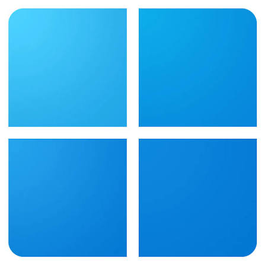
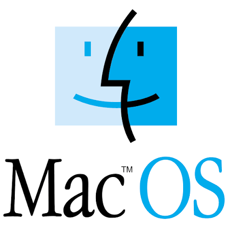

Learning
Definition
The core software that manages a device hardware and run its application, being the bridge between you and the machine.
Operating System main features includes
- Process Management
- Memory Management
- File System Management
- Device and IO Management
- User Interface
Famous Operating Systems
- android
- IOS

Window- Linux

MacOS
| Operating system | Advantages | Disavantages |
|---|---|---|
| Android | Flexibility and variety | Inconsistent updates |
| iOS | Simplicity and security | Closed ecosystem |
| Linux | Control and development | Learning curve |
| Windows | Software and gaming | Maintenance and malware risk |
| macOS | Creative work and design | Price and limited hardware |